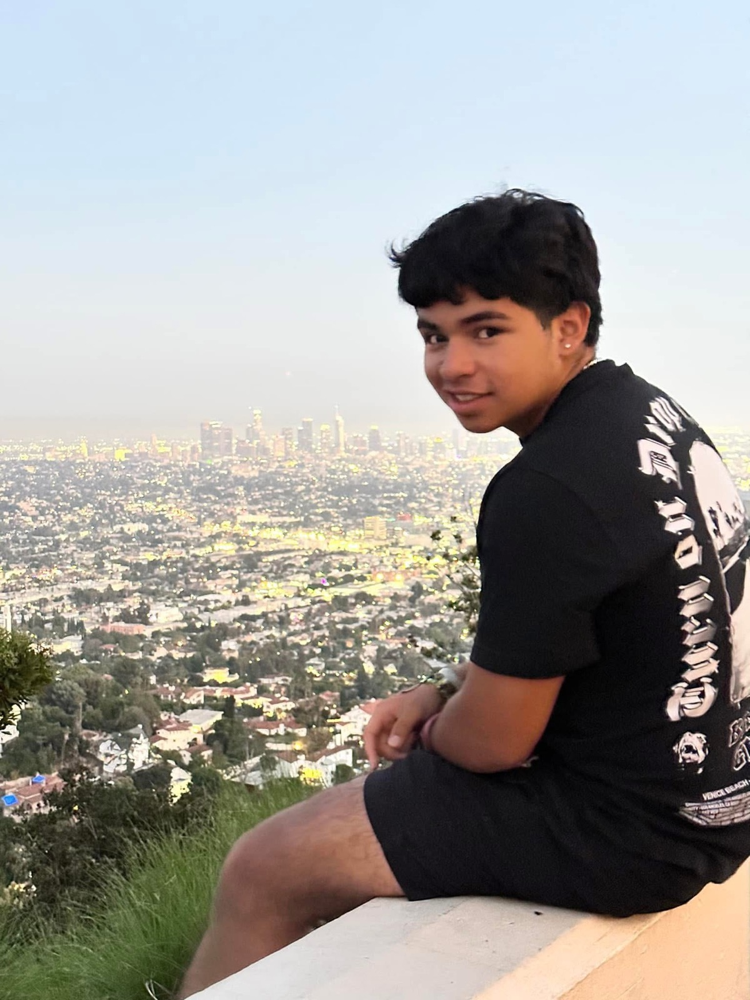

Computer Science at Temple University
I build tools and systems that make complex software feel easy to use.
I am Antonio Lazaro, a first-generation CS student interested in backend infrastructure, developer tools, human-AI interaction, and the details that keep applications responsive as they grow.

const antonio = {
focus: ["backend", "developer tools", "HCI"],
stack: ["TypeScript", "Python", "React", "FastAPI"],
currentMode: "building useful systems"
};